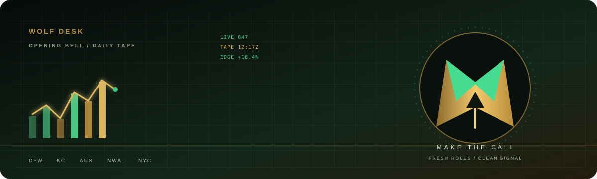

WOLF DESK / LIVE TAPENEW TAPE · —FOCUS SEATS · —BOARDS ONLINE · —SYNCING · DAILY
THE PITCH DESK · LOCAL ONLY
Make the numbers talk.
Bring the original DOCX to the desk, line it up against live roles, and sharpen the story before you send it. Your file is processed in this browser tab only—it is never uploaded, placed in GitHub, or saved to the site.
Storage Browser memory onlyFormat Original DOCXChanges None
THE PITCH FLOOR · ORIGINAL ART
Bring a sharper story.
The right role is a live opportunity. Put your evidence on the desk, tighten the close, and make every number earn its place.
LOCAL RESUME · DIRECT APPLICATION

THE FILE ROOM
Put your pitch on the desk.
Private
This page does not have a copy of your resume. Choose the file directly from your computer whenever you want to review it.
No file selectedYour resume will stay on this device.